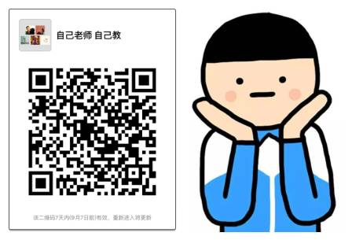
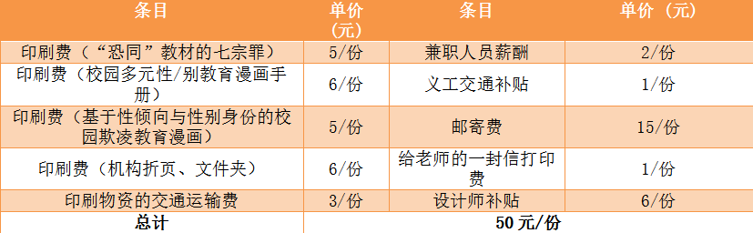
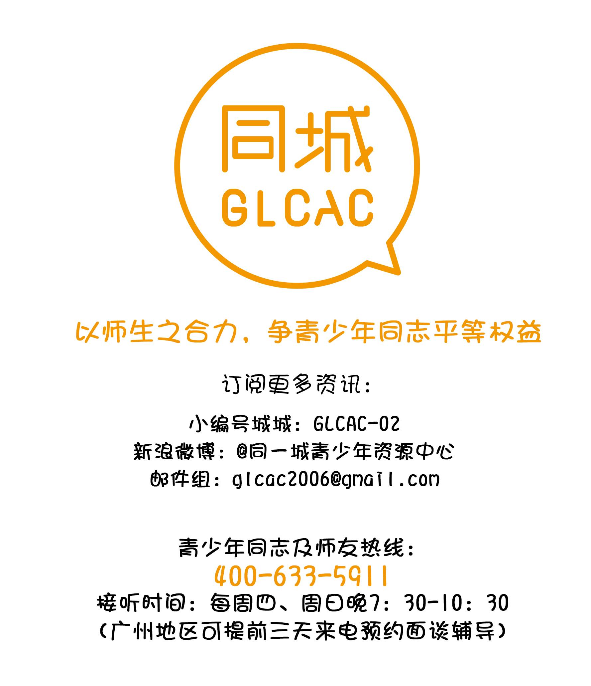

【加群】自己老师自己“教”！9.10让老师“同志”频道开脑洞！
一言不合，先扫个二维码来撩老师吧！（文后有彩蛋，不蟹拿去~）：

踌躇已久，还是遗憾当年未能向高中老师出柜？
很想让老师知道ta身边有同志（LGBT）学生，却找不到好办法？
当在学校被人因性别气质而欺负/排斥时，老师视若无睹？
又是一年教师节，如果有机会改变以上现状，你会付诸行动吗？
丢50块，捐个地址，我们就可以帮你秘密地向老师针对同志议题来”补课“啦~~
圆你一个心愿，撩么？
SO，我们想邀请1000位ji友，给自己的老师“补课”。只要你提供一个地址和50块，我们就将以“同志群体”的名义，给你的老师邮寄完整的“校园同志友善大礼包”。而这份特别的“教师节礼物”，将能够打开老师的“性/别世界”大门，下一个友同老师，也许就从这份礼物开始！让Ta看见同志，造福千千万万的师妹师弟们！
记住，是匿名参与哦！！！
无论你性倾向是什么，无论你毕业与否，你可以：
1、提供一个学校名字或邮寄地址。
（注意：最好是有详细的教师或学校地址/电话等。如您已扫描都不记得了，可仅提供制定的学校名字。我们将帮助学校详细地址，并寄往学校教务处主任和心理咨询中心主任处。）
2、捐助50元
（自己老师，自己教！只有完成捐款的地址方能生效邮寄）。
心动不如行动，快来扫码填写吧~~
如对参与有任何疑虑和困难，可扫描文章开头的二维码进入微信群，入群后我们提供各种指导~！
自昨天发布，一天之内各平台阅读量总计已接近2万。很多中学生来信愿意提供学校地址和老师名字。但没能力捐款。因此，欢迎您认捐至少1位高中生参与的机会。这也是参与的力量。
每份大礼包的成本价为50元，成本清单如下——

您可提供多个邮寄地址，每个邮寄地址默认寄送一份大礼包50元哟！（土豪请随意砸）
保存下面支付宝二维码到手机再扫描，捐款并备注“认捐学生”即可。
（注意：本活动不支持微信转账方式。）
可以是你从幼稚园到大学的任何老师、班主任、辅导员、校长、教务主任…..只要你觉得Ta缺乏“同志”和性/别友善意识，缺少敏感性，就符合“补课”条件！
当然，如果什么都不记得了，就直接指定一个城市的学校名字吧。
文末彩蛋：2015年教师节特辑│五位教师齐亮相：我们撑同志
／／／／／／
［发起机构］
同城青少年资源中心
同志之声
［联合主办］
华科HGP小组、苏州LESGO公益小组、西政彩虹关爱小组、中山大学彩虹小组、关艾彩虹、乐窝LALAs_VOICE、南大性别性向平等协会、汕大橘子社、雨滴社、酷儿论坛、江苏同天、DiversityUNNC
欢迎加小编微信号 GLCAC-02，我将在朋友圈实时分享我们填资料、打包、邮寄、跟进的全过程哟！让我们一起见证创造改变的过程！我们圈内见……
／／／／／／
本文非营利性地使用了漫画家脏小白的“小崽子剧场”漫画形象


